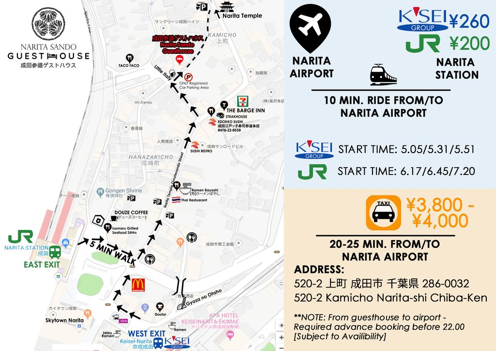
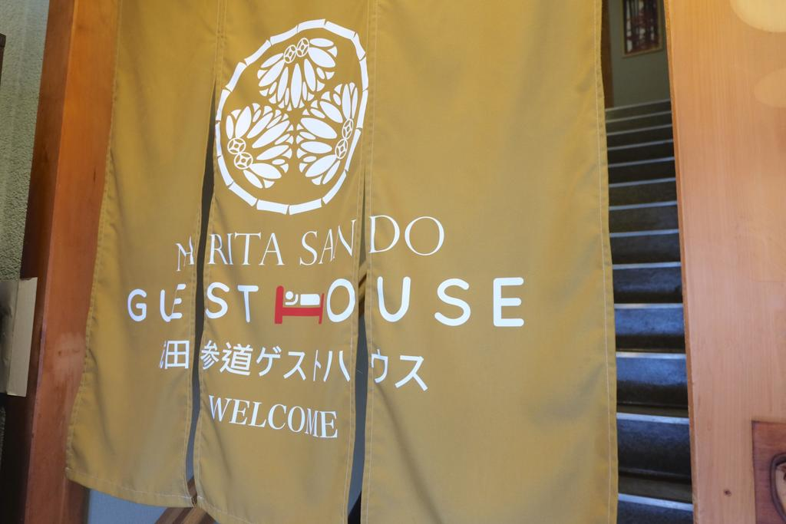
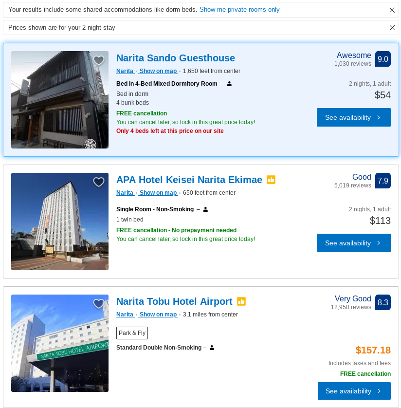

５月２４日に修学旅行があるので、８万円を持ってきておきます。午後３時（月曜日）、成田国際空港で日本に着きます。

はじめに、私のことをホテルに入れる。成田のバス停がないかもしれません。だから、駅の近くホテルがほしいです。

成田参道ゲストハウスで２泊は５４ダラーしかじゃないよ。私はダラーを七百四十八ぐらいも持っています。

あのホテルに歩こうと思っています。成田国際空港から4マイルしかじゃないから。